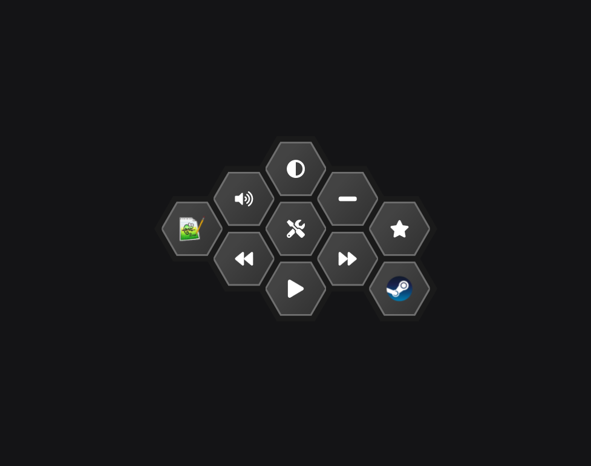
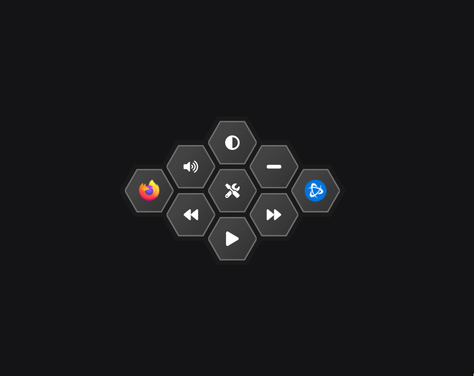
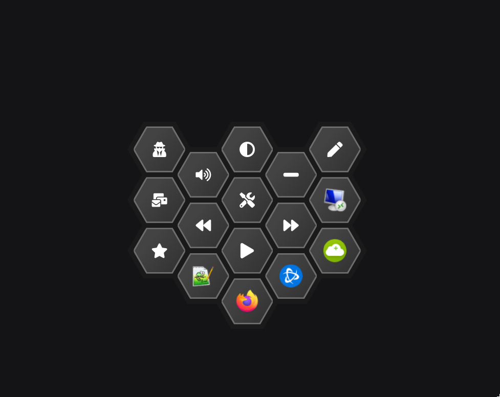
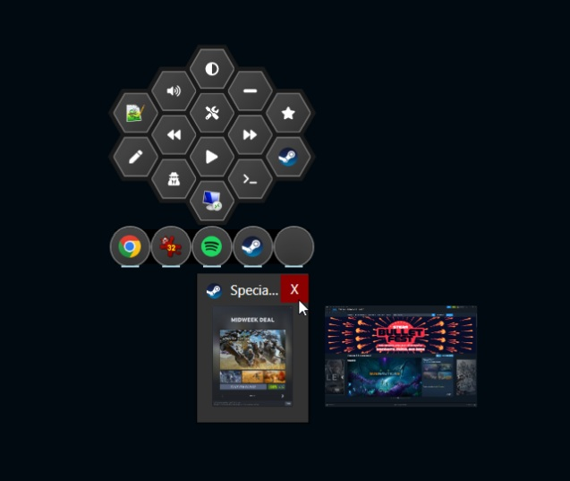

Built-in system controls
Adjust brightness, volume, and media playback right from the same menu — no extra hotkeys or tray icons to hunt for.



Customize every action
Pin the apps, shortcuts, and tools you use most, and shape the grid around how you actually work.

Remote Desktop compatible
Keep control of your local machine's shortcuts even inside a full-screen RDP session. You can even summon two instances, local and remote, simultaneously, for maximum productivity.

App thumbnails & fast switching
Peek at live previews of your open windows right from the hex menu and jump straight to the one you need — no blind alt-tabbing.